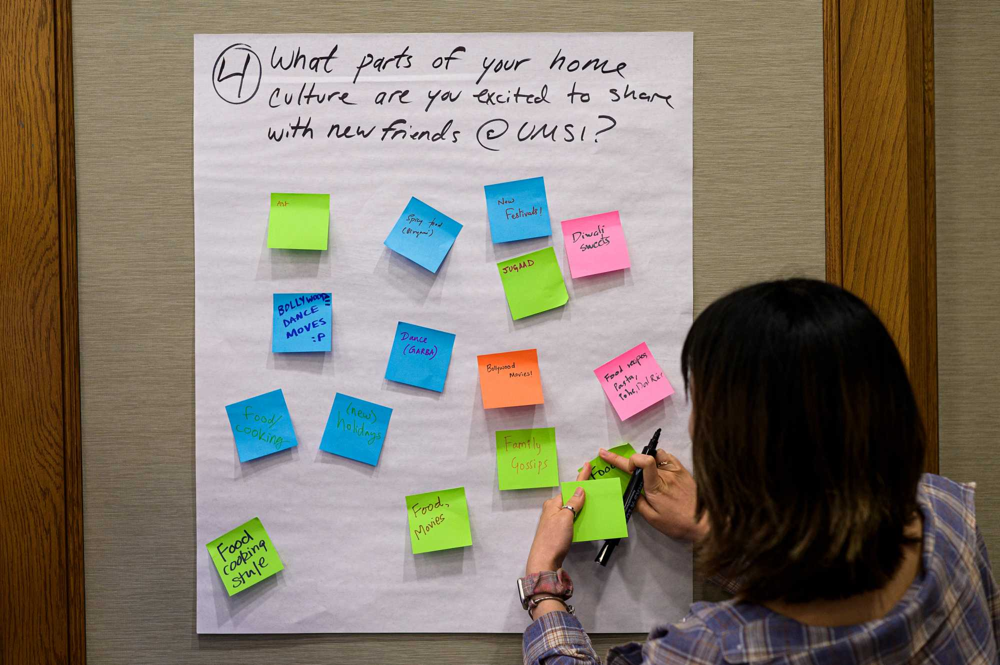
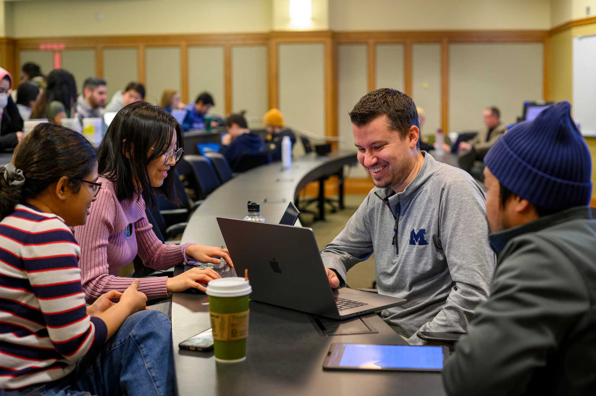
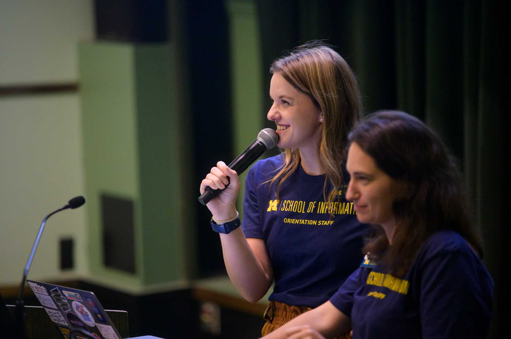

Set learning goals, understand the project context, examine your assumptions, define team roles, and establish a strong relationship with your partner.
Build Skills. Work with Partners. Have an Impact.
Transform your academic foundation into real-world impact. The UMSI Engaged Learning Office (ELO) guides you through the crucial early stages of project work—from self-reflection and community context to team charters and initial client kickoff.
Why Use This Resource?
Real-world projects rarely follow a perfect plan. This site helps you find the right guidance when you need it, so you can spend less time searching for materials and more time learning, collaborating, and moving your project forward.
- Follow a clear process Move from preparation and project launch through active work, reflection, and responsible closeout.
- Find practical support Access relevant templates, checklists, examples, and how-to guidance for common project needs.
- Build professional skills Strengthen your communication, teamwork, project management, and ethical decision-making.
- Turn experience into evidence Identify what you learned and communicate your impact in resumes, portfolios, and interviews.
Guidance for Every Stage
Engaged learning projects can change as new needs, constraints, and insights emerge. Find guidance for the stage of work you are navigating now.
Start Here

Manage projects and teams, conduct ethical research, communicate progress, respond to feedback, and work through unexpected challenges.

Complete a responsible handoff, evaluate your impact, reflect on your growth, and translate your work into resume, portfolio, and interview content.

Featured Programs
Explore opportunities to collaborate with organizations, communities, student teams, and partners in Michigan and beyond.
AI Clinic Project ExperienceWork with a team on an applied artificial intelligence project for a partner organization.
A2 Data DiveUse information and data skills to help address challenges identified by community organizations.
Alternative Fall BreakParticipate in a community-engaged learning experience during the University’s fall break.
Alternative Spring Break (ASB)Collaborate with communities and nonprofit organizations on information-related projects during
spring break.
Student Organization Engaged Learning LeadersDevelop leadership and project-management skills while supporting engaged learning through a UMSI
student organization.
Study AbroadBuild intercultural awareness and apply your learning in an international setting.
About the Engaged Learning Office
The Engaged Learning Office works with partners across industries and sectors, from technology companies to grassroots nonprofits and cultural heritage institutions, to provide project-based opportunities for UMSI students.
Its mission is to facilitate transformational engaged learning experiences and enable innovative, sustainable, and mutually beneficial information solutions for local and global communities.